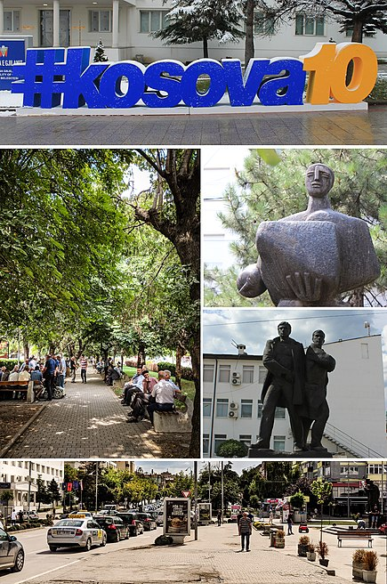
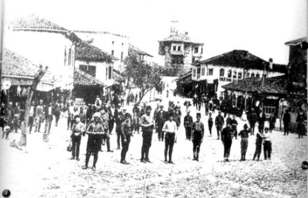
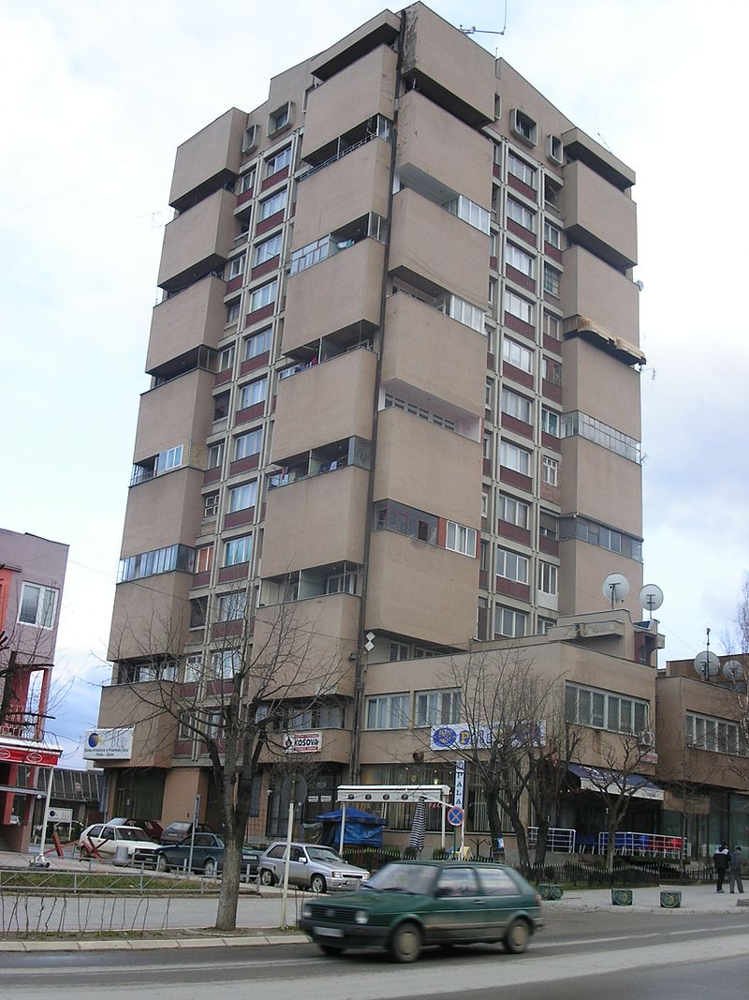

-GJILAN-

Gjilan is the eighth largest city of Kosovo and seat of Gjilan Municipality and Gjilan District.

In 1342, a place called Morava was visited by Serbian King Stefan Dušan (later Emperor, r. 1331–1355).
fort was built nearby in the 14th century. Gornja Morava ("Upper Morava") was known as simply Morava under Ottoman rule,
and it extended west of the Upper Žegra–Budriga–Cernica line, thus Gjilan stayed in the oblast (province) of Topolnica,
which provincial seat was Novo Brdo.
In the 1455 defter (Ottoman tax registry), Gjilan was inhabited by Serbs, and the priest Božidar served the town.
On 23 January 1944 during World War II in Gjilan around 8000 Kosovo Albanians were killed by Yugoslav Partisans.
This event is remembered every year in the framework of Flaka e Janarit and named as Gjilan massacre 1944.
In 1999, Camp Monteith was established outside the city as a base of operations for KFOR during Operation Joint Guardian,
on the site of a destroyed Serbian military base which was handed over to the Kosovo Protection Corps in 2007 after the U.S.
Military downsized their number of troops.
Gjilan has also served as the regional headquarters of the UNMIK International Police task force from 1999.
Gjilan is located in the southeastern part of Kosovo, the region of Anamorava.
Its geographic position makes it possible to make good connections with other centers of Kosovo and the region.
Around the town of Gjilan lis the Hill of Martyrs (Popovica), Gllama, Dheu i Bardhë, the area of Malisheva (Gjilan),
Zabeli of Sahit Agës and Bregu i Thatë.
There are three small rivers, Mirusha, Banja and Stanishori, which join and flow to Binačka Morava, west of the Uglara village.
There are 3,700 registered private businesses in the municipality employing 7,900 people. Before 1999,
Gjilan was an important industrial centre in Kosovo. Still in operation are the radiator factory and tobacco factory, which has been recently privatized.
The new city business incubator, supported by the European Agency for Reconstruction, was inaugurated in the summer of 2007.
Education in Gjilan includes primary and secondary education, and a public university.
Currently there are 23,608 Albanian students and 881 minority students enrolled in educational institutions around Gjilan.
The primary education ranging from grades 1−5 along with the lower secondary education is obligatory for all citizens and it begins when the child
turns 6 years old. It is free of charge.
The second phase of the obligatory education is the so-called lower secondary education which consists of teenagers usually around 12–15 years of age,
therefore, grades 6–9. This education, according to the law, is also free of charge and publicly funded.
The lower secondary education in Gjilan is held in Albanian, Serbian, and Turkish language.

The population of Gjilan has always been mixed, but with a predominant majority of Albanians in both periods during Turkish and Serbian-Yugoslav rule.
According to the 2011 census, the Municipality of Gjilan has 90,178 inhabitants. Albanians – 87,814, Serbs – 624, Turks – 978, Bosniaks – 121, Roma – 361,
Ashkali – 15, Gorani – 69, Egyptians – 1, others – 95. They preferred not to respond – 35 people. In the city live 54,239 inhabitants,
while in rural areas – 35,939. Division of population by gender: male – 45,354, female – 44,824.
Based on the population estimates from the Kosovo Agency of Statistics in 2016, the municipality has 81,447 inhabitants.
Flaka e Janarit is a cultural event that starts on January 11 in Gjilan with a symbolic opening of the flame,
to keep up with various cultural activities to 31 January of each year.
It gathers thousands of artists and art lovers from all the Albanian territories,
who for three consecutive weeks transform the city into a cultural metropolis. The nation's martyrs are honored through values of art by this event,
which began before the 10th anniversary of the assassination of writer, activist and patriot Jusuf Gërvalla, along with Kadri Zeka and Bardhosh Gërvalla.
It was exactly the tenth anniversary without these three martyrs of freedom and from coincidence of these murders in a same date on 11 January,
this event got this name "Flaka e Janarit".
There are 41 mosques in Gjilan.
^